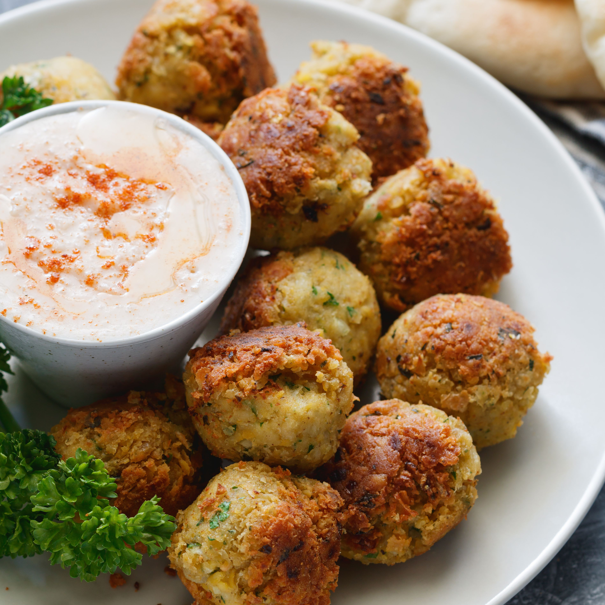

- Dried chickpeas - 1 cup
- Onion - 1 small, finely chopped
- Fresh parsley - 1/4 cup, chopped
- Fresh cilantro - 1/4 cup, chopped
- Garlic cloves - 2, minced
- Ground cumin - 1 tsp
- Ground coriander - 1 tsp
- Baking powder - 1 tsp
- Salt - 1 tsp, or to taste
- All-purpose flour or chickpea flour - 2-4 tbsp
- Vegetable oil - for frying
|
- Soak dried chickpeas in water overnight. Drain well.
- In a food processor, combine chickpeas, chopped onion, parsley, cilantro, minced garlic, cumin, coriander, baking powder, and salt. Process until mixture is finely ground but not pureed.
- Transfer mixture to a bowl and stir in enough flour (2-4 tbsp) to bind the mixture together. It should be firm enough to form balls without sticking excessively.
- Heat vegetable oil in a deep frying pan or pot to 350°F (175°C).
- Form mixture into small balls or patties, about 1.5 inches in diameter.
- Gently place falafel balls into the hot oil, frying in batches until golden brown and crispy, about 3-4 minutes per batch.
- Remove falafel from oil and drain on paper towels.
- Serve hot with pita bread, hummus, tahini sauce, and fresh vegetables.
|

|